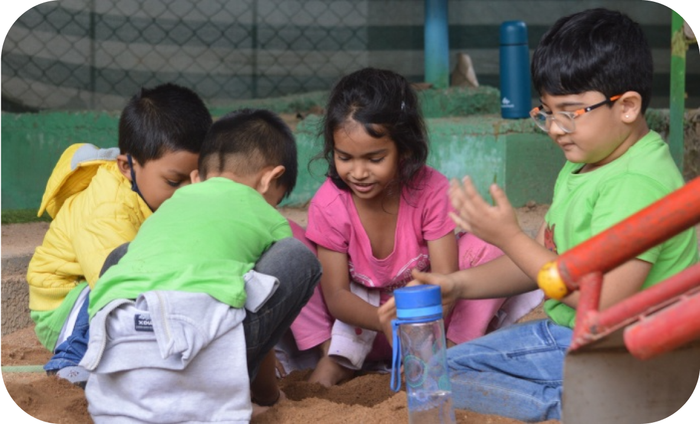

INTERNATIONAL GCSE
Edexcel International GCSEs are globally recognised qualifications
with academic content and assessment designed specifically for
international learners. It delivers a consistent learning journey for
students and teachers, with world class support services, everywhere
in the world.
The IGCSE professes that its curricula aim at “deep subject
knowledge, independent research, work across disciplines keeping
learning enjoyable and rewarding, smooth progression from stage to
other in a spiral process”. The freedom to design the curriculum is
granted keeping in view the diverse needs of culture and national
contexts.
In India, International GCSE is accepted as equivalent to 10th grade
of other Indian boards and Edexcel is one of the approved boards and
an associate member of COBSE (Council of boards of school education
in India).
A good grade in International GCSE English as a Second Language is
accepted for entry by almost all universities in the UK, Germany,
Canada and Australia as evidence of adequate competence in the
English Language.
International GCSE Science will help the students to develop
scientific abilities and skills relevant to the study of science
which will be of use in everyday life. Students will gain an
awareness of the study and practice of science and will understand
that scientific applications have both beneficial and inimical
effects on the individual and the environment.
INTERNATIONAL ADVANCED LEVEL
Edexcel International AS/A Levels (IAL) are globally recognised
qualifications which open doors to top universities worldwide.
Available for 21 subjects, they have a modular structure, yet remain
comparable to GCE AS/A levels, as confirmed by NARIC, the national
agency responsible for providing information and expert opinion on
qualifications and skills worldwide.
‘A’ level of Edexcel is recognized by AIU (All India Universities) as
equivalent to +2 stage qualification of an Indian Board giving access
to the bachelor degree programs at all Indian Universities.
CONNECT
CONTACT
QUICK LINKS
About Phoenix
Admissions
Parent Community
Blog
Careers
Office: +91 821-4257452
Mobile:+91 9008484556
email: centrehead@myphoenixacademy.com


© 2022, All Rights Reserved. | Terms & Conditions |
Privacy Policy | Disclaimer
POMOGRANATES
A play school is a starting point or a stepping stone to the beginning
of good education for your child. Here at PIA we have our Pomegranate
Programme which is designed for the kids aged from as little as 2.5
years to 5 years. Your child may explore a wide variety of academic,
social, physical and emotional lessons in addition to fine and gross
motor skills for the overall development of the child. Our teachers
have a friendly approach which helps the child develop their interest
towards learning.
How our day is spent here?
■ Activities such as circle time, song time, active play time, story
time, and craft time.
■ Transitional periods that exist between activities like learning
how to walk in a line with peers and how to
clean up toys and supplies are taught.
■ We develop the interest in art, music, dance and drama.
■ Reading aloud by the teacher happens on a daily basis where the
child develops listening skills and
imagination.
■ Field trips are designed to learn more about what’s happening
around them.

PRIMARY
PIA aims at preparing students to be responsible and productive
citizens with strong critical thinking and academic skills by
providing a comprehensive curriculum delivered by qualified staff in a
safe and caring environment. Teachers and staff work hard to provide
the best educational experience for students. Parent partnership is a
high priority and is essential for student success.
PIA provides concept rather than content based education, along with
high moral character of all students. Along with academics we focus
and encourage our students for co-curricular activities like swimming,
karate, yoga, dance, drama, music and fitness which helps in the
overall development of the child.
LOWER SECONDARY
PIA Lower secondary education programmes are typically designed to
build on the learning outcomes from primary education. It is
critically defining point in the educational career of a student. It
serves as a bridge between Primary School and International GCSE.
Usually the aim is to consolidate the foundation for lifelong
learning. Programmes at this level are organized around more
subject-oriented curriculum, introducing theoretical concepts across a
broad range of subjects.
Teachers at PIA emphasise on long-term impact on a student's
readiness for future academic challenges. At Middle School, students
begin to take more responsibility for their learning and the teacher
assumes the role of a facilitator.
Curriculum design, teaching strategies and assessments are aligned
with the standards of the core programme developed by our
experienced staff members.
PHOENIX
MYSURU'S LEADING
INTERNATIONAL WORLD SCHOOL
INTERNATIONAL ACADEMY

Office: +91 821-4257452
Mobile:+91 90084 84556
SAPIENT GLOBAL EDUCATIONAL TRUST